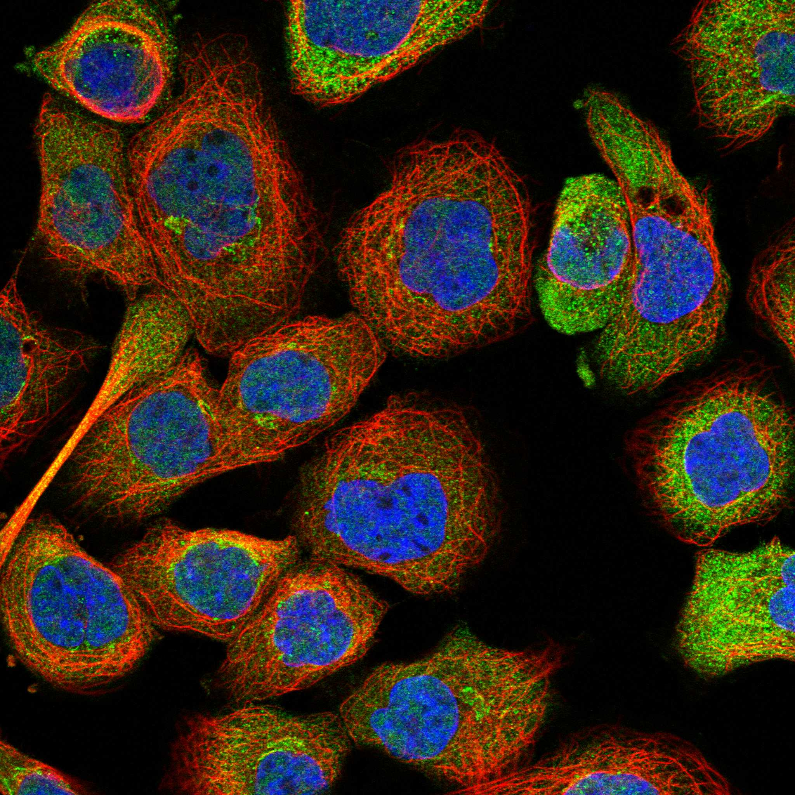
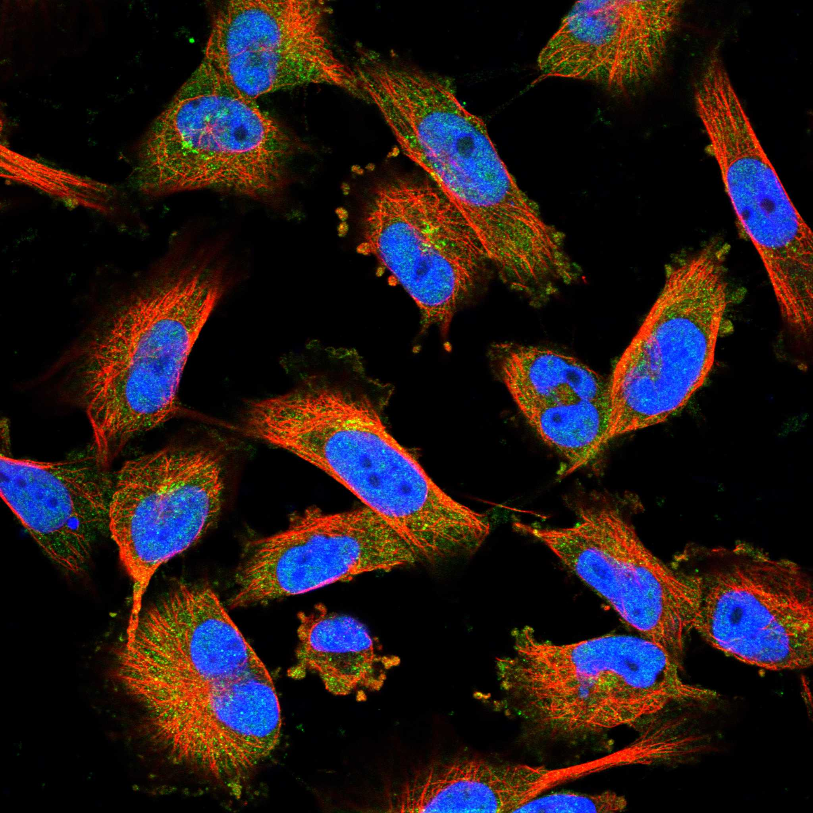

type: protein-evaluation gene: "BROX" date: 2026-06-03 tags: [protein-scout, nuclear-protein, evaluation] status: scored ---
BROX 核蛋白评估报告 (Full Re-evaluation)
1. 基本信息
| 项目 | 内容 |
|---|---|
| 基因名 / 别名 | BROX / BROFTI, C1orf58 |
| 蛋白名称 | BRO1 domain-containing protein BROX |
| 蛋白大小 | 411 aa / 46.5 kDa |
| UniProt ID | Q5VW32 |
| 评估日期 | 2026-06-03 |
IF 图像:  
2. 评分总览
| 维度 | 得分 | 满分 | 加权后 | 关键证据摘要 |
|---|---|---|---|---|
| 🔴 核定位特异性 | 7/10 | ×4 | 28 | HPA: Golgi apparatus; 额外: Nucleoplasm, Cytosol; UniProt: Nucleus membrane |
| 📏 蛋白大小 | 10/10 | ×1 | 10 | 411 aa / 46.5 kDa |
| 🆕 研究新颖性 | 10/10 | ×5 | 50 | PubMed strict=12 篇 (≤20→10) |
| 🏗️ 三维结构 | 10/10 | ×3 | 30 | AlphaFold v6 pLDDT=92.0; PDB: 3R9M, 3ULY, 3UM0, 3UM1, 3UM2, 3UM3, 3ZXP |
| 🧬 调控结构域 | 8/10 | ×2 | 16 | InterPro: IPR004328, IPR038499, IPR038898; Pfam: PF03097 |
| 🔗 PPI 网络 | 3/10 | ×3 | 9 | STRING 15 partners; IntAct 15 interactions |
| ➕ 互证加分 | — | max +3 | 3.0 | PDB+AF+STRING+IntAct cross-validation |
| 原始总分 | 146.0/180 | |||
| 归一化总分 | 81.1/100 |
3. 详细分析
3.1 核定位证据
| 来源 | 定位 | 可信度 |
|---|---|---|
| Protein Atlas (IF) | Golgi apparatus; 额外: Nucleoplasm, Cytosol | Approved |
| UniProt | Nucleus membrane | Swiss-Prot/TrEMBL |
GO Cellular Component:
- extracellular exosome (GO:0070062)
- nuclear envelope (GO:0005635)
- nuclear membrane (GO:0031965)
结论: 主要核定位，HPA 可靠性良好，有辅助数据源支持。
3.2 蛋白大小评估
评价: 大小适中（200-800 aa），适合常规生化实验和结构解析。
3.3 研究现状
| 指标 | 数值 |
|---|---|
| PubMed strict count | 12 |
| PubMed broad count | 640 |
| 别名(未计入scoring) | Aliases observed but not used for scoring: BROFTI, C1orf58 |
关键文献: 1. Structure of the Bro1 domain protein BROX and functional analyses of the ALIX Bro1 domain in HIV-1 budding.. *PloS one*. PMID: 22162750 2. Brox, a novel farnesylated Bro1 domain-containing protein that associates with charged multivesicular body protein 4 (CHMP4).. *The FEBS journal*. PMID: 18190528 3. BROX haploinsufficiency in familial nonmedullary thyroid cancer.. *Journal of endocrinological investigation*. PMID: 32385852 4. The ESCRT-II Subunit EAP20/VPS25 and the Bro1 Domain Proteins HD-PTP and BROX Are Individually Dispensable for Herpes Simplex Virus 1 Replication.. *Journal of virology*. PMID: 31748394 5. The neuronal-specific SGK1.1 (SGK1_v2) kinase as a transcriptional modulator of BAG4, Brox, and PPP1CB genes expression.. *International journal of molecular sciences*. PMID: 25849655
评价: 极度新颖，几乎未被系统研究（PubMed ≤20篇）。
3.4 三维结构分析
| 指标 | 数值 |
|---|---|
| AlphaFold 版本 | v6 |
| AlphaFold 平均 pLDDT | 92.0 |
| 高置信度残基 (pLDDT>90) 占比 | 83.5% |
| 置信残基 (pLDDT 70-90) 占比 | 10.0% |
| 中等置信 (pLDDT 50-70) 占比 | 2.7% |
| 低置信 (pLDDT<50) 占比 | 3.9% |
| 有序区域 (pLDDT>70) 占比 | 93.5% |
| 可用 PDB 条目 | 3R9M, 3ULY, 3UM0, 3UM1, 3UM2, 3UM3, 3ZXP |
PAE 图像说明: AlphaFold PAE 图像已重新获取并嵌入（见下方 PAE 图像修正块）；结构判断仍结合 pLDDT 与 PAE 综合判断。
评价: PDB实验结构（3R9M, 3ULY, 3UM0, 3UM1, 3UM2, 3UM3, 3ZXP）+ AlphaFold极高置信度预测（pLDDT=92.0），结构可信度极高。
3.5 结构域分析
| 来源 | 结构域 |
|---|---|
| InterPro/Pfam | InterPro: IPR004328, IPR038499, IPR038898; Pfam: PF03097 |
染色质调控潜力分析: 多个已知结构域注释，AlphaFold预测质量高，结构域折叠可信。
3.6 PPI 网络
STRING 预测互作 (combined score >0.4):
| Partner | Combined Score | Experimental | 功能类别 |
|---|---|---|---|
| CHMP4B | 0.984 | 0.975 | — |
| CHMP5 | 0.974 | 0.947 | — |
| CHMP4C | 0.736 | 0.562 | — |
| CHMP4A | 0.731 | 0.437 | — |
| CHMP6 | 0.617 | 0.098 | — |
| VPS4B | 0.585 | 0.289 | — |
| VPS4A | 0.575 | 0.289 | — |
| STAM2 | 0.546 | 0.091 | — |
| VPS28 | 0.541 | 0.095 | — |
| CHMP1A | 0.524 | 0.172 | — |
实验验证互作 (IntAct):
| Partner | 方法 | PMID | ||
|---|---|---|---|---|
| FN1 | psi-mi:"MI:0030"(cross-linking study) | imex:IM-14135 | pubmed:19738201 | |
| HNRNPCL2 | psi-mi:"MI:0030"(cross-linking study) | pubmed:30021884 | imex:IM-26653 | |
| TCEA1 | psi-mi:"MI:0007"(anti tag coimmunoprecipitation) | pubmed:28514442 | doi:10.1038/na | |
| IPO9 | psi-mi:"MI:0007"(anti tag coimmunoprecipitation) | pubmed:28514442 | doi:10.1038/na | |
| CHMP1A | psi-mi:"MI:0007"(anti tag coimmunoprecipitation) | pubmed:28514442 | doi:10.1038/na | |
| NFYA | psi-mi:"MI:0007"(anti tag coimmunoprecipitation) | pubmed:33961781 | imex:IM-29278 | |
| NS3 | psi-mi:"MI:0007"(anti tag coimmunoprecipitation) | pubmed:33845483 | pmc:PPR177217 | |
| EBI-25475894 | psi-mi:"MI:0007"(anti tag coimmunoprecipitation) | pubmed:33845483 | pmc:PPR177217 | |
| Q80BV4 | psi-mi:"MI:0007"(anti tag coimmunoprecipitation) | pubmed:33845483 | pmc:PPR177217 | |
| RNF149 | psi-mi:"MI:0007"(anti tag coimmunoprecipitation) | pubmed:33961781 | imex:IM-29278 |
PPI 互证分析:
- STRING + IntAct 均有数据
- STRING partners: 15，IntAct interactions: 15
- 调控相关比例: 0 / 15 = 0%
评价: STRING 15 个预测互作，IntAct 15 个实验互作。调控相关配体占比 0%。
3.7 多库互证
| 维度 | 来源 | 结果 | 是否一致 |
|---|---|---|---|
| 三维结构 | AlphaFold pLDDT=92.0 + PDB: 3R9M, 3ULY, 3UM0, 3UM1, 3UM2, | pLDDT=92.0, v6 | 预测+实验 |
| 定位 | UniProt + HPA | Nucleus membrane / Golgi apparatus; 额外: Nucleoplasm, Cytosol | 一致 |
| PPI | STRING + IntAct | 15 + 15 interactions | 数据充分 |
互证加分明细:
- PDB + AlphaFold 双源验证: +0.5
- 多库定位一致 (3源): +0.5
- STRING + IntAct 双源验证: +0.5
- 结构域 + AlphaFold 质量: +0.5
- PDB 多条目覆盖 (≥3): +1.0
总分: +3.0 / max +3
4. 总体评价
推荐等级: ⭐⭐⭐⭐
核心优势: 1. BROX — BRO1 domain-containing protein BROX，极度新颖，几乎未被系统研究（PubMed ≤20篇）。 2. 蛋白大小411 aa，大小适中（200-800 aa），适合常规生化实验和结构解析。
风险/不确定性: 1. PubMed 12 篇，研究基础极有限，功能注释不完整 2. 结构数据质量可接受
下一步建议:
- [ ] 查阅最新关键文献补充研究背景
- [ ] 获取 Protein Atlas IF 图像确认亚细胞定位
- [ ] 设计体外实验验证核定位及潜在调控功能
5. 数据来源
- UniProt: https://www.uniprot.org/uniprotkb/Q5VW32
- Protein Atlas: https://www.proteinatlas.org/ENSG00000162819-BROX/subcellular
- PubMed: https://pubmed.ncbi.nlm.nih.gov/?term=BROX
- AlphaFold: https://alphafold.ebi.ac.uk/entry/Q5VW32
- STRING: https://string-db.org/network/9606.ENSP00000
- Packet data timestamp: 2026-06-03 04:16:03
<!-- AF_PAE_REPAIR_START --> PAE 图像修正（2026-06-05）: AlphaFold 提供 predicted aligned error 图像；此前“PAE 图像暂无数据”的表述为未获取/未嵌入导致。

<!-- DOMAIN_HUMANPPI_REPAIR_START -->
Domain/SMART 与 humanPPI 补充（2026-06-06）
SMART / UniProt domain
| Source | Data | |
|---|---|---|
| UniProt | Q5VW32 | |
| SMART | SM01041; | |
| UniProt Domain [FT] | DOMAIN 90..408; /note="BRO1"; /evidence="ECO:0000255\ | PROSITE-ProRule:PRU00526" |
| InterPro | IPR004328;IPR038499;IPR038898; | |
| Pfam | PF03097; |
humanPPI / HPA Interaction
Source: https://www.proteinatlas.org/ENSG00000162819-BROX/interaction
| Partner | Datasets | AF3/HPA structure |
|---|---|---|
| CHMP4B | Intact | false |
| RNF149 | Biogrid | false |
| TCEA1 | Intact | false |
<!-- DOMAIN_HUMANPPI_REPAIR_END -->